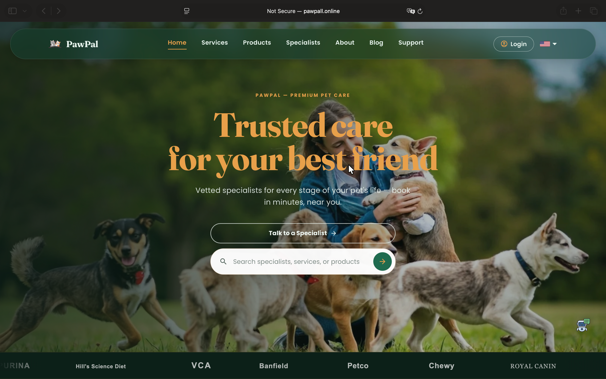
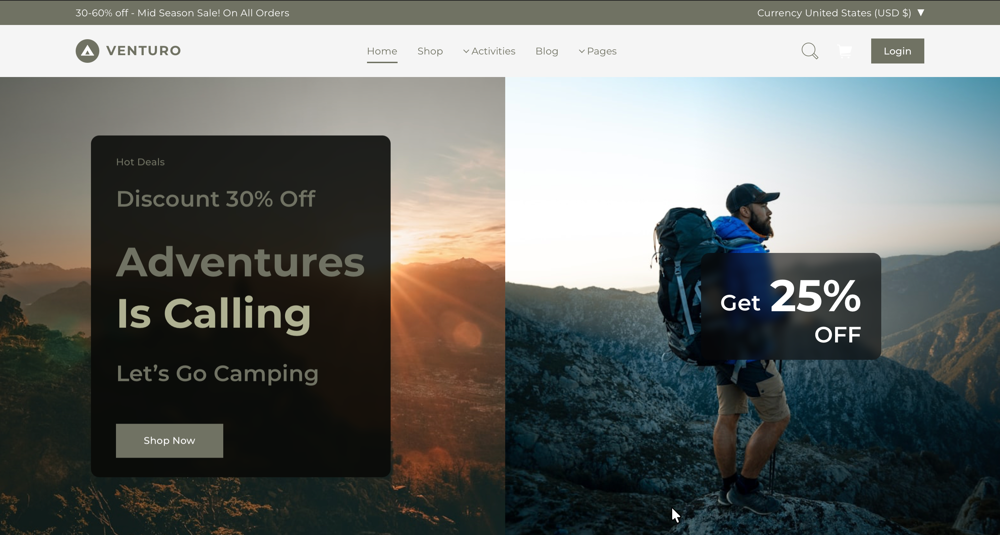
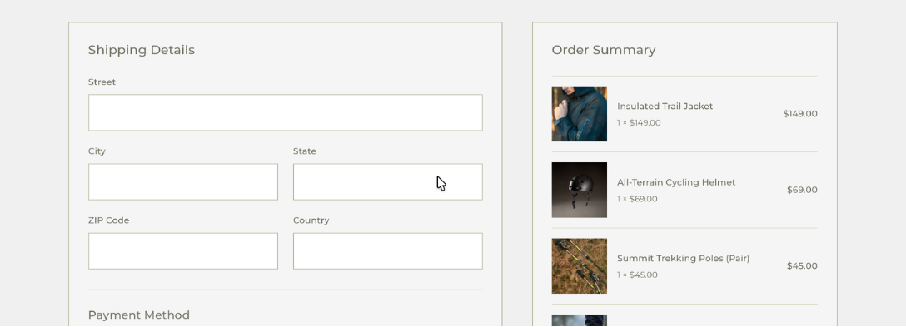
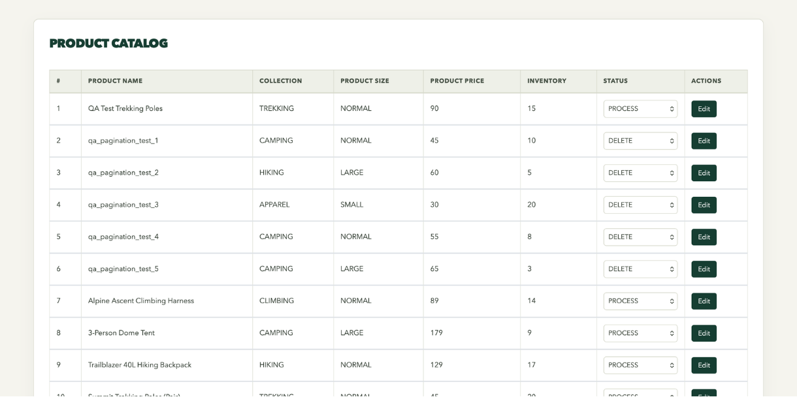
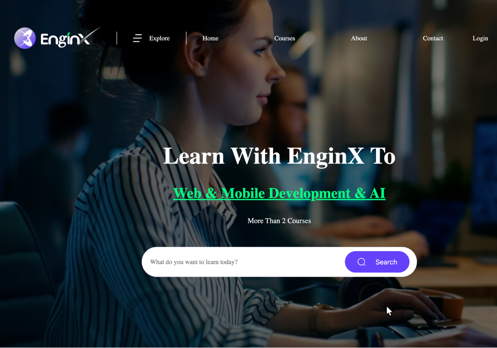

Frontend
Building responsive, maintainable interfaces and data-driven application experiences.
- React
- Next.js
- TypeScript
- JavaScript
- Redux Toolkit
- Material UI
- Styled Components
- SCSS
- EJS
- jQuery
- Bootstrap
- Axios
- Apollo Client
Portfolio 2026
Full-Stack · DevOps · Agentic Engineer
Building production-ready products across web, infrastructure, and AI.
I design and build modern applications from frontend and backend architecture through deployment and AI-assisted workflows.
About
From Uzbekistan to South Korea — building a long-term career in software engineering, infrastructure, and AI.
I came to South Korea from Uzbekistan to continue my education and build a long-term career in technology. My interest in problem-solving started early through mathematics and regional competitions, which developed the analytical and disciplined way I approach technical challenges today.
While completing my M.S. in AI Business Engineering at Seoul Media Institute of Technology, I moved deeper into software engineering and began building full-stack products across frontend, backend, databases, deployment, and AI-integrated features. Over time, my focus expanded from simply writing applications to understanding how reliable products are designed, deployed, secured, and maintained in production.
Today, I work across Full-Stack Development, DevOps, and Agentic Engineering. I enjoy learning quickly, taking ownership, collaborating with people from different backgrounds, and turning complex requirements into practical products. My goal is to continue growing as an engineer in South Korea and contribute to a team where I can take on real responsibility and build software that creates measurable value.
M.S. AI Business Engineering
SMIT · 2026
Gyeonggi-do · South Korea
D-10 Job Seeker Visa
Available Immediately
Full-Stack
DevOps
Agentic Engineering
Fast Learner · Initiative & Ownership · Adaptability · Collaboration · Analytical Problem Solving
Expertise
Technologies I use to build, deploy, and improve production-ready applications across web, infrastructure, data, and AI-assisted workflows.
Building responsive, maintainable interfaces and data-driven application experiences.
Designing APIs, authentication flows, application logic, and persistent data layers.
Taking applications from local development to stable Linux-based production environments.
Using data, AI models, and agentic development workflows to build and accelerate intelligent software.
Projects
01Flagship project
Pet Care Services & Products Marketplace
A full-stack pet-care marketplace connecting pet owners with specialists, services, products, bookings, community features, and AI-assisted support in one platform.

Scheduled batch service
Products + Services
Requested → Confirmed / Cancelled → Done
User · Specialist · Admin
OpenAI-powered contextual support
{ _id } rather than copying the full member document into the token.BLOCK and DELETE member states are rejected during authenticated requests.14 MongoDB collections across marketplace, booking, community, and messaging domains.
02E-commerce
Outdoor E-Commerce Platform
A full-stack outdoor e-commerce platform built around product discovery, secure checkout, inventory integrity, administrative operations, and production deployment.


Backend resolves and validates pricing, rather than trusting client-submitted totals.
Inventory validated before order creation; decremented only on a successful order.
Order + items + inventory protected by MongoDB transaction logic to avoid partial checkout state.
JWT identity · bcrypt verification · live member revalidation from MongoDB. BLOCK / DELETE states are rejected.
Separate session-based authentication for the EJS admin interface.
Public signup cannot assign privileged roles.

Product/member management runs through an EJS server-rendered administration interface.
03E-learning platform
E-Learning Platform
A role-based e-learning platform where students discover, purchase, and access structured learning content while instructors and administrators manage approved courses.

Experience
Sep 2022 – Mar 2025
RemoteTechNest Digital · Tallinn, Estonia
Education
2024 – 2026
South Korea
Seoul Media Institute of Technology (SMIT)
AI · NLP · Deep Learning · Data Analysis · AI-integrated Applications
Contact
Full-Stack · DevOps · Agentic Engineer
Building production-ready products across web, infrastructure, and AI — with a focus on clean architecture, reliable deployment, and practical business impact.